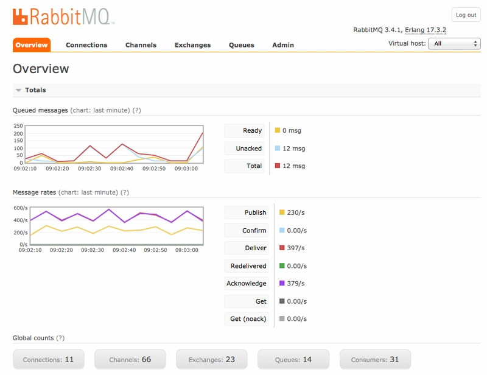
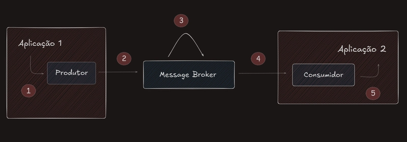
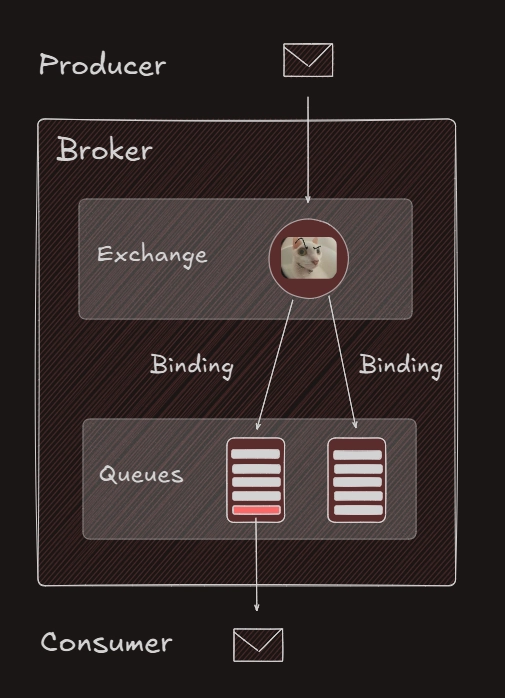

Ao final deste artigo, espera-se que você seja capaz de:
- Definir mensageria e entender seu objetivo;
- Explicar a relação entre mensageria, sistemas de mensagem e um message broker;
- Identificar os componentes fundamentais de um sistema de mensagem;
- Reconhecer e diferenciar os termos message broker, producer, consumer, exchange, queue, binding, listener, mensagem e topologia.
Introdução
Quando navegamos na Internet, realizamos constantemente trocas de informações: recebemos o conteúdo de um site, enviamos dados por meio de formulários ou acionamos serviços ao clicar em botões.
Em determinadas situações, a prioridade é a velocidade da transmissão, mesmo correndo o risco de perda de pacotes.
Por exemplo, em videoconferências, para garantir comunicação em tempo real, voz e vídeo são enviados via protocolo UDP, que não assegura a entrega íntegra dos pacotes, o que pode resultar em queda de qualidade de imagem ou distorções de áudio.
Já em outras situações, como em arquiteturas de microsserviços, a prioridade é garantir a entrega da informação de um serviço ao outro e é nesse ponto que a mensageria ganha destaque.
O que é mensageria, sistema de mensagem e message broker?
O termo Mensageria é utilizado para descrever o processo de comunicação entre sistemas, componentes de software ou serviços através do envio e recebimento de mensagens.
Ao utilizarmos esse termo, não estamos fazendo referência a uma ferramenta específica mas sim ao mecanismo que possibilita a comunicação síncrona ou assíncrona entre sistemas distribuídos.
As mensagens enviadas e recebidas são blocos de dados (geralmente binários ou em formatos como JSON) definidos pelo desenvolvedor.
Para implementar essa comunicação em um sistema real, precisamos de uma infraestrutura capaz de aplicar esse mecanismo na prática.
E é aí que entra o sistema de mensagem que oferece recursos para:
- Criação, transmissão, armazenamento e entrega de mensagens entre aplicações
- Protocolos de transporte (AMQP, MQTT, STOMP)
- APIs e SDKs para produção e consumo
- Suporte a filas, tópicos e roteamento
- Message broker
Como exemplo de sistema de mensagens, temos o RabbitMQ que suporta os protocolos AMQP, MQTT e STOMP. E também possui um message broker, componente responsável por receber, armazenar e encaminhar as mensagens entre os produtores e consumidores.
Na imagem abaixo, temos a interface visual do RabbitMQ que mostra em tempo real o que acontece dentro do message broker:

Diagrama de um Sistema de Mensagem
Agora que entendemos os principais conceitos, fica mais fácil visualizar esse processo em funcionamento. No diagrama abaixo, é possível acompanhar o caminho percorrido por uma mensagem: da aplicação produtora, passando pelo message broker (exchange e queue), até chegar ao consumidor que processa a informação e retorna o resultado para a aplicação final.

- A camada de negócio chama o componente produtor
- O produtor envia a mensagem para uma exchange do message broker
- A exchange roteia a mensagem para uma ou mais filas
- O consumidor lê da fila e processa a mensagem
- O resultado do processamento é utilizado pela aplicação
No diagrama observamos o fluxo da mensagem desde o produtor até o consumidor. Dentro do próprio message broker, como você deve ter percebido, existem elementos que fazem esse processo acontecer de forma organizada.
Componentes dentro do Message Broker

A exchange recebe as mensagens enviadas pelo produtor e decide para onde cada uma deve seguir. Ela não armazena dados, apenas encaminha a mensagem com base em regras definidas.
Em seguida, temos a queue, que funciona como uma fila de espera. As mensagens ficam armazenadas nela até que algum consumidor esteja disponível para processá-las.
A ligação entre uma exchange e uma fila é chamada de binding. É através dessa configuração que o broker entende quais mensagens devem ser direcionadas para cada fila. Essa organização envolve as exchanges que estão presentes e o tipo de cada uma delas, como direct, fanout, topic ou headers (tópico que possivelmente será discutido em alguma postagem futura).
Consumo de mensagens na aplicação
A mensagem que chega à fila é processada por um consumidor. Na aplicação, esse papel costuma ser implementado por um listener que escuta a fila e, ao receber uma nova mensagem, executa a lógica de negócio. Com o processamento bem-sucedido, o consumidor envia um ACK ao broker, que então remove a mensagem da fila.
Essa relação entre exchange, queue, binding e listener e a forma como eles se organizam dentro do sistema de mensagem é chamada de topologia. A topologia mostra quais exchanges existem e seus tipos, quais filas recebem mensagens, como os bindings conectam cada exchange às filas e quais consumidores estão ligados a cada uma delas.
Com isso, conseguimos modelar desde cenários simples, em que existe apenas uma fila consumida por um único serviço, até arquiteturas complexas, em que várias exchanges distribuem mensagens para diferentes filas e consumidores especializados.
Pensar na topologia é essencial porque ela define o caminho da informação dentro do sistema e garante que cada mensagem chegue ao destino correto.
Conclusão
Nesta primeira parte, organizamos os conceitos: produtor, exchange, fila, binding, listener e topologia. Com os termos claros e o percurso da mensagem bem entendido, implementar a topologia em código fica muito mais simples. Na parte dois, vamos para a prática com Java e RabbitMQ.